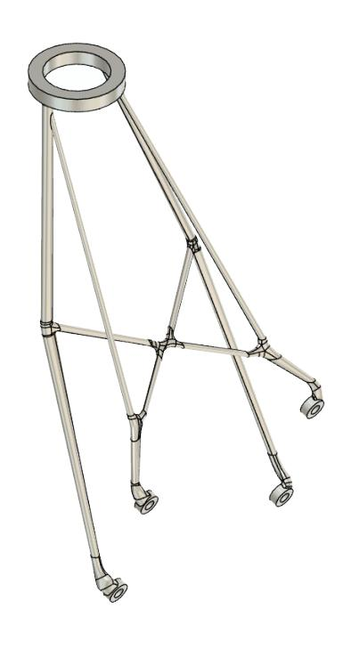

Materials Science & Additive Manufacturing
Course projects on topology optimization, additive manufacturing process design, and structural/fatigue analysis, completed during the M.Sc. in Aeronautical Engineering.
Topology Optimization of a Vega Payload Adapter Bracket
An ECSS-compliant structural redesign of a support bracket for the Vega launcher's payload adapter, targeting a lightweight, additively manufacturable component while meeting stiffness, frequency, and safety-factor requirements under a 15 g static launch load and cross-axis vibration environment.


The optimization process moved through several iterations of mass and stiffness maximization, followed by a design-for-additive-manufacturing phase evaluating support structures (h-cell, rod, and tree configurations) and print orientation. The rod-support configuration was selected for its lower mass and better deformation performance.


A compensated geometry approach was used to counteract print-induced springback, fully eliminating residual deformation while keeping peak stresses below the AlSi10Mg yield threshold.
| Metric | Original | Optimized |
|---|---|---|
| Mass | 453 g | 73.6 g (−83.6%) |
| Qualification Safety Factor | — | 1.25 |
| Support configuration | — | Rod supports, horizontal orientation |
Topology Optimization of an Aerospace Bracket in PEKK Antero 800NA
Applying Design for Additive Manufacturing (DfAM) principles, this project minimized structural deformation of a lightweight bracket under a 150 N distributed load, 3D printed in PEKK Antero 800NA via FDM, and validated the simulation against physical correlation testing.


An Ω-shaped geometry, printed horizontally to align fibers with the applied load and reduce support material, was selected over a V-shaped alternative that proved prone to excessive bending. Supports were removed post-print using a 22 g/L NaOH solution.


Physical test results: yielding observed at approximately 150 N / 0.56 mm vertical displacement.
| Model | Weight | Displacement | Printing time |
|---|---|---|---|
| Original | 100% (14.18 g) | 0.173 mm | 17 min |
| Ω-shape (chosen) | 36% (5.17 g) | 0.291 mm | 55 min |
Static and Fatigue Analysis of a Helicopter Rotor Mast
A complete analytical and numerical structural assessment of a helicopter main rotor shaft, combining Von Mises and Guest-Tresca failure criteria with finite element analysis (Abaqus, hexahedral mesh) to locate critical notch sections, and validating the results against experimental strain gauge data.


Experimental validation was performed using a strain gauge rosette on a hydraulic axial/torsional test machine, cross-checking the analytical and FEM predictions against measured strains at the critical section.